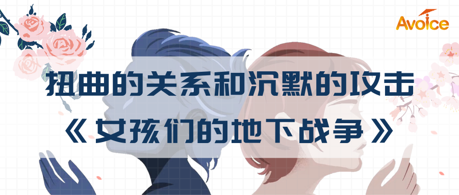
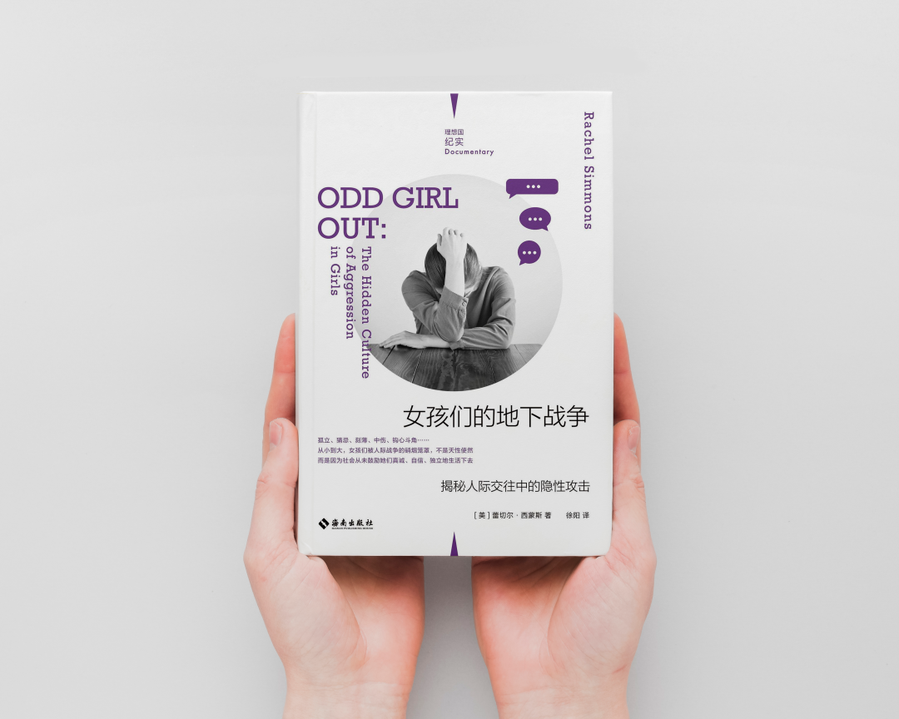
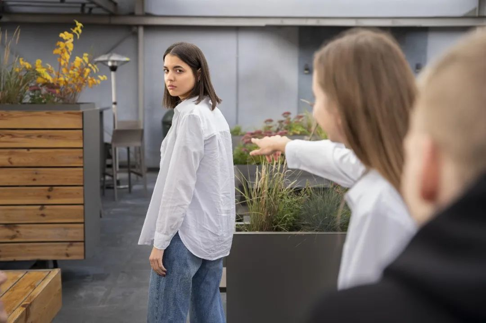
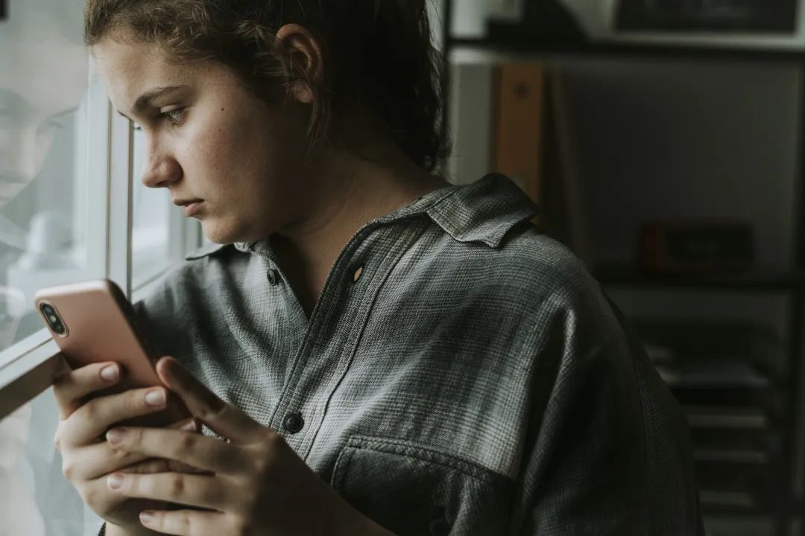

Abstract
Aggression in girls often emerges insidiously in intimate relationships, especially during adolescence, when girls are more likely to be sensitive and vulnerable. Aggression caused by abnormal social norms puts both the bully and the bullied in danger, and the distinct indirectness and elusiveness of this "alternative aggression" also makes it more difficult for schools and parents to intervene and respond. Under such circumstances, acknowledging the prevalence of violence among women and changing the public perception of this " culture of aggression" will help build a more friendly and healthy environment for women’s growth.

“Girls perceive an incentive to claim power through aggression. More than ever before, girls face pressure to be and act and look in ways that undermine their healthy development.”
— Rachel Simmons
When we talk about Violence Against Women (VAW), have we already assumed that the perpetrators are men? According to an article from Beijing Social Sciences, the term "violence against women" is defined as any gender-based violence against women in accordance with the Declaration on the Elimination of Violence Against Women issued by the UN. In other words, women-on-women violence should also be included in the category of "VAW". However, the fact is, there is very little research on violence between women. [^1]: Li, P.C. （2016）Violence among women: An ignored form of gender-based violence. Beijing Social Sciences, 1, 13–20. Women-on-women violence can take the form of direct physical conflict as well as indirect assaults like gossip, ostracization, and unique cyberbullying in the digital age, with the latter being more prevalent. Compared with men's tendency to "solve problems with their fists", bullying among women is often indirect and covert and thus it is often ignored, which to some extent exacerbates the stereotype about women in society. However, we should be aware that this unique plague-like aggression, which is cruel and destructive to both the perpetrator and the victim, is deeply rooted in the presumptions and expectations of women in our society. The World Health Organization(WHO) divided a woman's life into five stages: prenatal stage, infancy, girlhood, adolescence, adulthood and post-menopausal years. The above-mentioned bullying is particularly prevalent among girls in their girlhood and adolescence, especially in their close relationships and school culture. Rachel Simmons’ book Odd Girl Out: The Hidden Culture of Aggression in Girls was written based on the author's examination of and in-depth conversations with the schoolgirls, their parents, and school administrators, teachers, and counselors of American primary and secondary schools. In her work, Simmons examined the causes of the hidden culture of aggression among girls, as well as the harm that this distorted social culture brings to the girls.
Intimate relationships of “perfect girls”

Women are "not allowed" to be openly in conflict. Simmons writes in her book, "It would also reveal what the culture does not entitle them to by defining what ‘nice’ really means: Not aggressive. Not angry. Not ever in conflict.” As a result, girls’ aggression are often forced into nonphysical, indirect and covert forms. For example, in the Chapter 3 The Truth Hurts, when confronted with the questions like "Will you tell someone when you are angry or upset with them?", the vast majority of girls expressed their fear of head-on confrontation, saying "The truth hurts, so I prefer to lie". The gap between intimacy and danger is just a hair's breadth away. Under the social stereotype and expectation that the 'perfect girl' should have the 'perfect relationship', when society expects the 'perfect girl' or 'good girl’ , they are deprived of the opportunity to face conflict head on and learn to deal with intimate relationships. When girls decide to 'punish' their best friend without showing their hostility, they often hide themselves behind a mask of sweetness and turn to silent attack; on the other hand, when the bullied girls need to face day-to-day cruel torturing, the fear of being alone often makes the bullied willing to maintain an abusive friendship. In this distorted culture of the 'perfect girl', the perpetrators may be unaware of their cruelty, while the bullied are happy with an unhealthy friendship. The special intimacy among girls was meant to be their unique path to complex intimacy; but when the right to express anger is stigmatized and the unexamined nature of relationships becomes an end in itself, the girls are unable to deal with the problems in the friendship through normal emotional interaction and self-expression. This indubitably leads to the difficulties or even tragedies in friendships.Distorted “Coming-of-age Ceremony”

Growing up does not necessarily come from fighting through adversity and desperate resistance. A distorted 'rite of passage' may only teach girls to exploit the cruelty of human nature. Even when a girl who has been bullied in school is eventually away from the place where she suffered so much, the confusion, discomfort, humiliation and frenzy for revenge that she suffered in the past may still emerge from time to time. That is why Simmons devotes the second half of the book to discussing how parents, teachers, and school administrators can provide the right guidance and help for girls as they grow up, in an attempt to provide them with a true rite of passage.Conclusion
Avoice海外华人女性保护项目介绍链接：

--- - Author | 庞海尘 - Co-authors | 马欣钰、桑宁敬 - Revisors | 符芬菊、吴思哲 - Correct | 秦科 - Layout | 游舸 - Translators｜Wenqin Yu, Yanshan Ye - Proofreader｜Wiley Luan - Images source | freepik